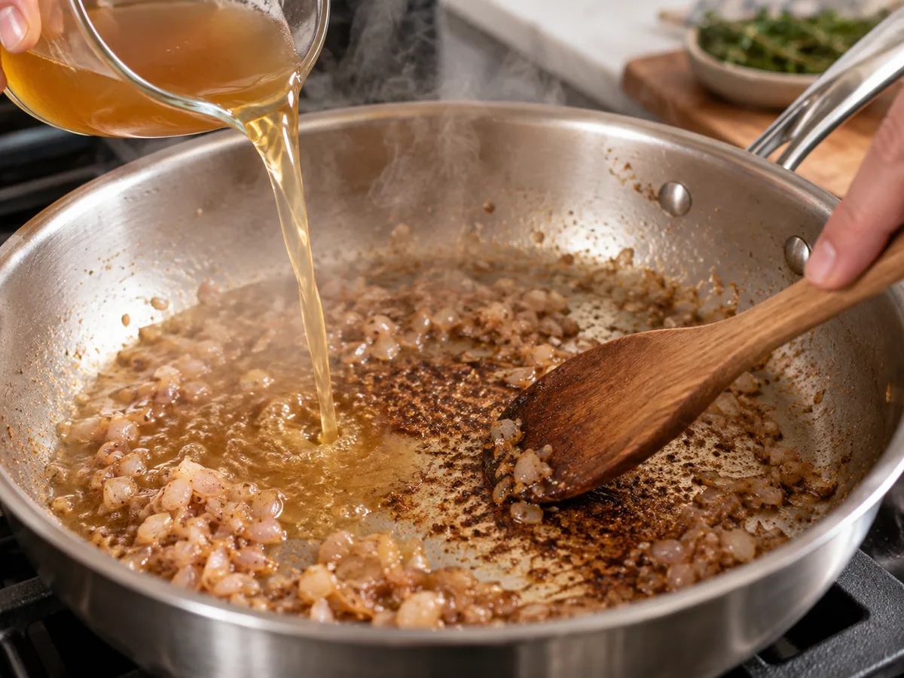

The most useful sauce in a home kitchen is rarely made in a separate saucepan. It is waiting in the skillet after dinner's main ingredient comes out: browned residue, a little rendered fat, and a pan still holding serious heat. A pan sauce turns that aftermath into dinner's best part. The technique is more reliable when you stop memorizing combinations and learn to answer five questions in order.
A pan sauce is not a recipe. It is a short negotiation between fond, liquid, concentration, fat, and acid.
1. Read the bottom of the pan
Fond is the thin layer of browned proteins and sugars stuck to the pan after searing meat, mushrooms, or sturdy vegetables. It should look chestnut, mahogany, or deep gold and smell roasted. Black patches that smell acrid are not concentrated flavor; they are burned. If only a few spots are black, wipe them carefully with a folded paper towel held in tongs. If the entire pan has scorched, wash it and begin the sauce in a clean skillet.
Stainless steel is especially good at producing visible fond. Cast iron also works, though dark metal makes burning harder to judge and reactive wine sauces can pick up a metallic edge if simmered too long. Nonstick pans release food so completely that they often leave little behind. You can still make a sauce in one, but it will depend more on stock, aromatics, and butter than on the pan's residue.
Before adding anything, remove the cooked protein to rest and assess the fat. You want roughly one tablespoon in a 10- to 12-inch skillet. Pour off excess fat, leaving the browned bits behind. If the pan is dry, add a teaspoon of oil or butter so the aromatics can cook rather than scorch.
2. Choose one aromatic, not the entire drawer
A tablespoon or two of minced shallot is the classic move because it softens quickly and disappears into the sauce. Onion needs longer. Garlic can burn in seconds in a hot pan, so add it after shallot or just before the liquid. Ginger, scallion whites, crushed fennel seed, or a sprig of thyme can steer the sauce toward a different meal without changing the underlying method.
Keep the skillet over medium heat. Add the aromatic and stir for thirty seconds to two minutes, depending on its size. You are looking for translucence and fragrance, not another round of deep browning. If the fond darkens rapidly, pull the pan off the burner for a moment. The stored heat in heavy metal is often enough to finish the shallot.
3. Deglaze with a liquid you would drink or spoon
Wine is traditional, but it is not mandatory. Dry white wine suits chicken, pork, mushrooms, and delicate fish. Red wine works with beef, lamb, duck, and earthy vegetables, although it needs more reduction to lose its raw edge. Dry vermouth is a useful refrigerator-door substitute. Stock makes a rounder, quieter sauce. Cider, unsweetened apple juice, beer, or even water can work when their flavor makes sense beside the food.
Add between a quarter and half cup. The pan should hiss. Use a wooden spoon to scrape while the liquid boils, paying attention to the corners. The browned layer will loosen and tint the liquid. If you deglaze with spirits, take the pan off the heat before pouring and never pour directly from a bottle near a flame.

4. Reduce by watching the bubbles, not the clock
Once the fond is dissolved, simmer briskly. A thin liquid produces quick, busy bubbles. As water evaporates, the bubbles become larger, slower, and glossier. Drag a spoon across the pan: if the trail closes instantly, keep reducing. If it stays open for a second before the sauce flows back, you are close.
Reduction concentrates everything, including salt. Use unsalted or low-sodium stock and delay final seasoning. A wide skillet can reduce half a cup in two or three minutes; a small saucepan may take twice as long. That is why a fixed time is less useful than visual cues.
For more body, add a half cup of stock after the first deglazing liquid has nearly evaporated. Gelatin-rich homemade stock creates a naturally silky texture. Boxed stock is usually thinner. A quarter teaspoon of plain powdered gelatin bloomed in the stock can reproduce some of that body without making the sauce taste starchy.
5. Finish off heat, then balance
When the sauce tastes concentrated and lightly coats a spoon, turn off the burner. Whisk in one or two tablespoons of cold butter, a few pieces at a time. The butter should emulsify, not melt into a yellow oil slick. If the pan is fiercely hot, wait twenty seconds or add a teaspoon of cool water before starting.
Now taste in a useful sequence: salt, acid, bitterness, richness. Salt first only if it is clearly lacking. Then add acid by drops—lemon juice, wine vinegar, cider vinegar, or sherry vinegar. Many heavy-tasting sauces need acid, not less butter. If it tastes harsh or bitter, a small spoonful of cream, honey, mustard, or fruit preserve can round the edges. Choose one; stacking every rescue ingredient muddies the result.
| Main ingredient | Deglaze | Finish | Fresh note |
|---|---|---|---|
| Chicken | White wine + stock | Butter + Dijon | Tarragon or parsley |
| Pork chop | Dry cider | Butter + grain mustard | Sage |
| Steak | Red wine + stock | Butter | Black pepper + chives |
| Mushrooms | Vermouth + stock | Butter or cream | Thyme + lemon |
The ratio you can carry in your head
For a skillet that served two to four people, begin with two tablespoons of minced aromatic, a quarter cup of assertive deglazing liquid, half a cup of stock, and one to two tablespoons of cold butter. This is not a law. It is a safe starting point that teaches scale. A larger pan evaporates faster; a sweeter wine may need less finishing sweetness; gelatin-rich stock may need less butter.
Make the sauce before carving the resting meat. Pour accumulated resting juices into the skillet just before the butter goes in. Those juices add seasoning and reinforce the connection between sauce and main ingredient. Once finished, spoon the sauce over and around the food rather than drowning a crisp crust.
A rescue guide for the pan in front of you
- Too thin: return it to a simmer before adding more butter. Reduction, not flour, is the first fix.
- Too salty: add unsalted stock or water, then reduce only enough to regain body. More acid can distract but cannot remove salt.
- Broken and greasy: remove from heat and whisk in a tablespoon of cold water. Add any remaining butter more slowly.
- Too sharp: add a small piece of butter or a spoonful of cream. Check whether the wine simply needed another minute of cooking.
- Not enough sauce: add stock while the fond is still available. Stretching a finished sauce with water dilutes its balance.
What changes when there is no meat
Vegetables create excellent fond when given real contact with the pan. Sear thick cabbage wedges, cauliflower steaks, mushrooms, or halved endive, then use the same sequence. Vegetable stock plus sherry vinegar makes a strong base; miso, mustard, or grated hard cheese can provide the savory finish that meat juices would otherwise bring.
For fish, work gently. Delicate fillets leave less fond and can shed fragments that burn. Use medium rather than high heat, remove loose pieces, and choose a short reduction with white wine or vermouth. Capers, lemon, and parsley add definition without overwhelming the fish.
Questions that come up at the stove
Can I make a pan sauce without alcohol?
Absolutely. Use stock, cider, or water with a little vinegar added at the end. Alcohol contributes aroma and acidity, but it is one option rather than the structure of the sauce.
Why did my butter form an oily layer?
The pan was too hot or the butter went in too quickly. Cool the sauce briefly, whisk in cold butter piece by piece, and keep it below a hard simmer once emulsified.
Can I thicken it with flour?
You can, but it changes the sauce into a small gravy and can dull bright flavors. First try reduction, gelatin-rich stock, or an off-heat butter finish. Use flour only when the meal calls for a more opaque, substantial sauce.